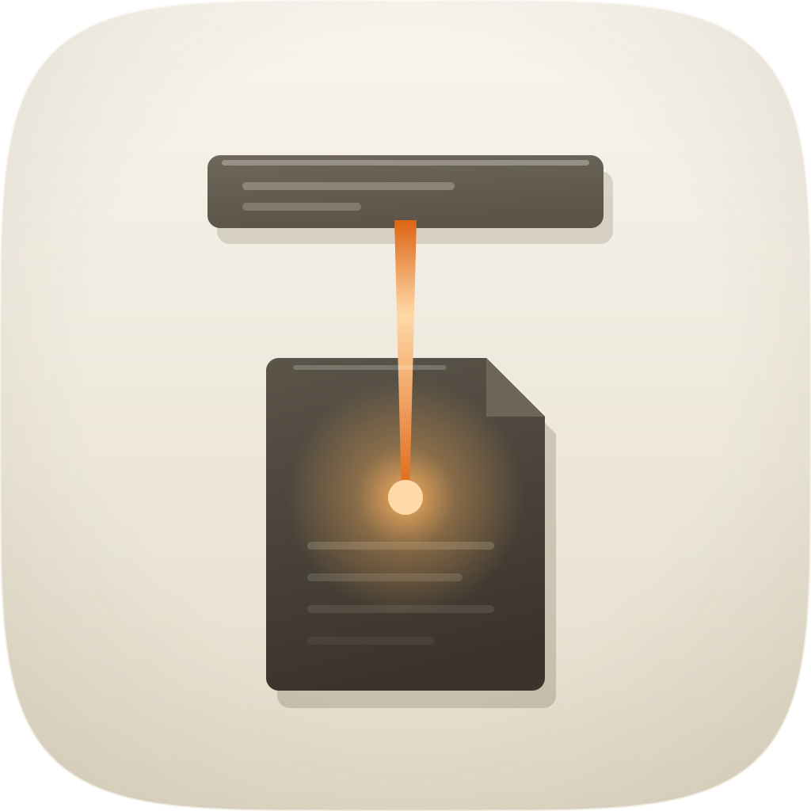
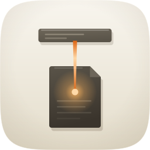
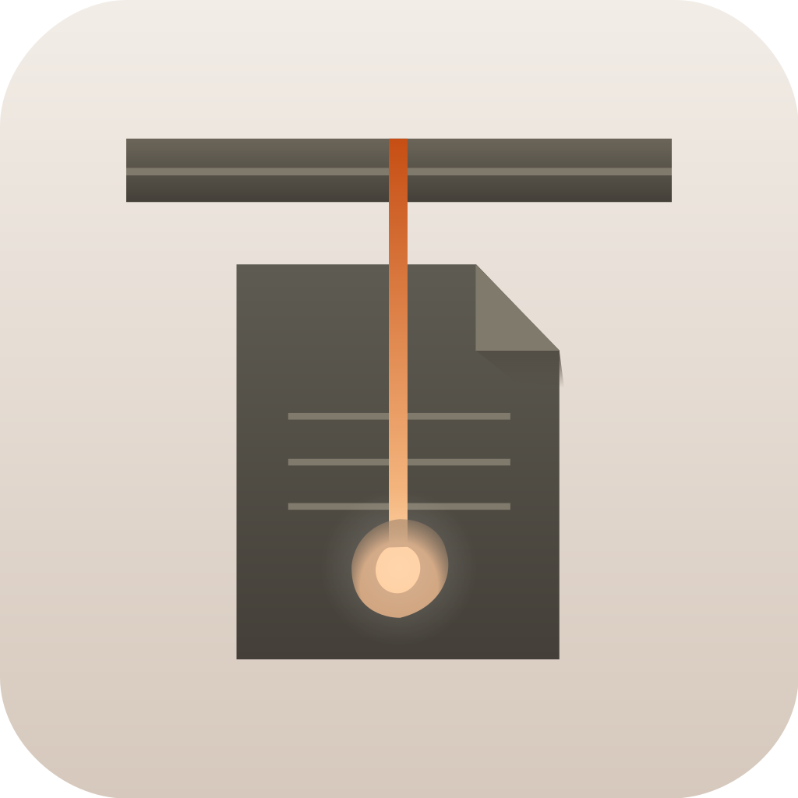
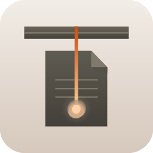

| Take | Hero at 1024, then renders at 128 / 64 / 48 / 32 / 16 css px (2× retina sources), plus the 16px squint magnified | Rubric | Verdict |
|---|---|---|---|
| A · icon.svgEngine A — hand-authored layered SVG, from build_icon.py — SHIPS | 11 / 12 | Checks 1–4 all pass on real renders. The shared squircle from create-mac-icon/assets/squircle-path.txt; the object fills 57% of tile width, inside the 55–65% band; the silhouette names the subject; and the identity survives the squint — bar, thread and lit page stay separable at ×6. One light top-left, warm contact shadows, two hue families on the family porcelain. Check 10, variant robustness, is untested rather than passed: identity rides on shape and value rather than a colour relationship, which is the right construction, but it has not been rendered against the dark, clear and tinted appearances. Two defects were found by looking rather than by a gate: the fold path ran one radius short on the right so its closing arc chamfered the top-left corner, and the turned corner was drawn darker than the page when a corner catching a top-left key is lighter. Both fixed here. |
|
| A2 · icon-A2.svgEngine A, second take — portrait page, tapered filament |   |
9 / 12 | Authored to test the axis Engine C raised rather than to win: a portrait document and a tapered rod against take A’s landscape page and constant-width one. It loses on check 4. The taper is prettier at 1024 and at 32px the rod is carrying about a third of the mass it needs, so the squint reads as a page with a smudge rather than as a link between two records. That is the finding the sheet exists to record: a taper costs exactly the pixels the identity is made of. Its portrait proportion is genuinely better than take A’s and was not salvaged, because widening the page is what let take A hit the focal band. |
| B · icon-engineB-3908df.svgEngine B — Arrow 1.1, independent vector take from the spec |   |
8 / 12 | Got the composition right unprompted, which is the useful signal: given the brief alone it also put the row above, the page below and the rod between them, so the device is legible rather than private to its author. It fails on material and on mask discipline. The ground is a flat fill with no cushion vignette and the objects have no volumetric shading, so it reads as a diagram rather than an object — check 12, era fit. Its tile is its own rounded rectangle rather than the family squircle, which would put a different outer shape in a lineup where every sibling shares one, and that alone rules it out as a master. The rod is thinner than specified despite the brief naming the width in canvas units. Nothing salvaged. |
| C · icon-engineC-01ad69-masked.pngEngine C — GPT Image 2, corpus-referenced raster, squircle-masked | 9 / 12 | The material target, and it wins that comparison outright: real beveled arrises on both slabs, a filament with a hot core and a genuine falloff, and a landing bloom that sits in the page rather than on it. Two things stop it shipping. Check 4: the needle is about four canvas units wide and is gone by 32px, so the icon at Finder-list size is a bar and a page with no link between them — the one thing it is about. And its ground is whiter than the family’s porcelain, with its own painted tile inside the frame, so masking it to the shared squircle leaves a visible second corner. Salvaged into the master: the beveled top arris on both slabs and the concentrated landing node. Not salvaged: the taper, for the reason take A2 records. |
stocktake, also a warm-accented object on porcelain, separated by making the accent a line between two anchored objects rather than a lit plane lifted clear of a stack — which holds at 128px and is tighter at 32px than at 256px.